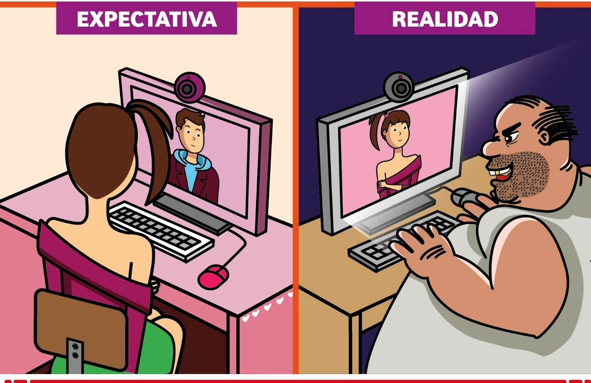
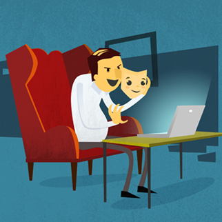
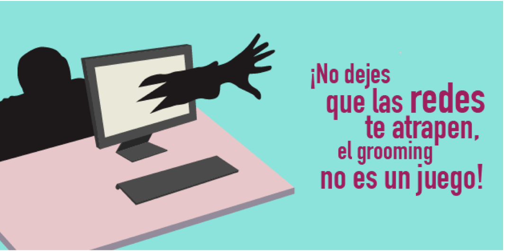
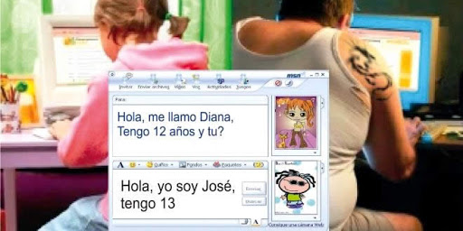
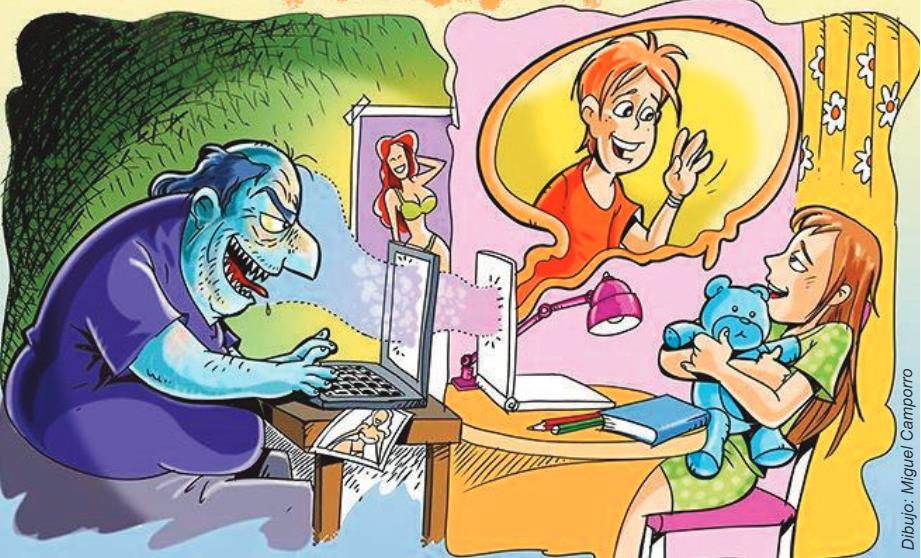

Etapas:
1.Buscar a la victima.
2.Enganche.
3.Fidelización.
4.Aislamiento.
5.Seducción.
6.Acoso.
Prevención:
1.Establecer unos hábitos de navegación seguros.
2.Extremar la precaución al conversar online.
3.Evitar prácticas de riesgo.
4.Comunicación y sensibilización.
5.Acompañamiento y supervisión.
concejos:
1. Cuando estés conversando con una persona, nunca, no importa quien sea, des tus datos personales, o los de un familiar (dirección, teléfono, nombres, documentos de identidad y/o contraseñas).
2. No contestes mensajes incómodos, ni hagas cosas que a tu criterio puedan estar mal; tu eres libre y nadie tiene derecho a obligarte a hacer cosas que no quieres.
¿Qué es el grooming?Sus objetivos son....
En ocasiones, los adultos se hacen pasar por menores en Internet o intentan establecer un contacto con niños y adolescentes que dé pie a una relación de confianza, pasando después al control emocional y, finalmente al chantaje con fines sexuales y tiene diversos objetivos:
1. Producción de imágenes y vídeos con connotación o actividad sexual, destinados al consumo propio de pederastas o a redes de abuso sexual a menores.
2. Encuentros en persona con el menor y abuso sexual físico.
3. Explotación sexual y prostitución infantil.

Etapas... Pasos o acciones cronológicas que hace el adulto agresor.
1. Buscar a la victima: Esto se puede hacer por medio de redes sociales, foros, paginas de conversaciones grupales y demás.
2. Enganche: Es allí donde prolongan una amistad más fuerte, preguntando por sus gustos, interesándose por ellos para ganar su confianza.
3. Fidelización: El acosador le hace saber al menor, que puede confiar en él y que su amistad es verdadera.
4. Aislamiento: El menor empieza a alejarse de las personas que lo rodea, y pasa mas tiempo en la computadora y su actitud es diferente.
5. Seducción: Para que el menor haga lo que el acosador le pide, él recurre a halagos, obsequios y mucha atención.
6. Acoso: El acosador se muestra tal cual es, y empieza con sus chantajes, amenazas,extorsiones y demás; para que el haga lo que él le pide.

¿Cómo raccionar? De que manera auxiliarse...
1. Deben saber que pueden acudir a los adultos de su confianza en busca de ayuda, ya que se trata de un problema de gravedad. Es el momento de transmitir al menor una actitud de seguridad y madurez para que se sienta protegido.
2. Si el menor ha decidido dar el paso de contarnos lo que está sucediendo, debemos valorar el esfuerzo que eso supone y no dudar o cuestionar sus palabras. No culpabilizar a la víctima y reafirmar nuestro apoyo incondicional.
3. No debemos dejarnos llevar por la situación o actuar irreflexivamente. Contactar con el acosador o borrar información (contenidos enviados, conversaciones, perfiles en redes sociales, etc.) puede dificultar la resolución del problema o incluso agravarlo.
4. Si nos encontramos ante un agresor que tiene (o dice tener) alguna información sensible en su poder, nunca debemos ceder a la manipulación, ya que empeorará la situación.
5. Ante una situación de grooming es imprescindible contactar con las Fuerzas y Cuerpos de seguridad. Es un delito complejo y ellos sabrán indicarnos los pasos que debemos seguir. Además, puede haber otros menores afectados por un mismo acosador: con nuestra denuncia nos implicaremos en su detención.
6. Las consecuencias pueden ser difíciles de afrontar, tanto para el menor como para su familia. El centro de salud y su centro educativo pueden ofrecer apoyo emocional y seguimiento si es necesario.

Prevención.Maneras de no caer en el grooming.
1. Establecer unos hábitos de navegación seguros:Acordar unas normas de uso de Internet en casa favorecerá su responsabilidad y su seguridad al conectarse. Debemos establecer unos horarios de uso y cuál será el lugar para usar esos dispositivos, procurando que sean espacios comunes.
2. Extremar la precaución al conversar online:Para los menores, un desconocido puede dejar de serlo si ya han hablado un par de veces por Internet. Puede incluso que el atacante sea una persona que sí conocen en persona. Por ello, en cualquier conversación online debemos ser cautos a la hora de compartir nuestra información personal y mantenernos alerta: no todo es lo que parece.
3. Comunicación y sensibilización:Hablar con naturalidad del amor y la sexualidad les ayudará a diferenciar las relaciones saludables de las que no lo son. Deben conocer con claridad cómo ocurre una situación de grooming y sus consecuencias para saber cómo protegerse. Además, una buena comunicación nos permitirá conocer sus hábitos en Internet y sus amistades online. Frente a un problema, podrán acudir a nosotros o a un adulto de referencia con el que se sientan cómodos.
4. Evitar prácticas de riesgo:En Internet es bastante fácil que alguien se haga pasar por quien no es. Por ello, es recomendable evitar prácticas como el sexting, así como no contactar o quedar con personas a las que no conocemos en persona. Siempre que alguien proponga un encuentro, comunicárselo a un adulto de confianza.
5. Acompañamiento y supervisión:El acceso de los menores a Internet debe ser progresivo y contar con el respaldo de un adulto, para que aprendan poco a poco cómo utilizar las nuevas tecnologías de forma segura y responsable. Para los más pequeños, podemos además instalar sistemas de control parental en los dispositivos, para limitar su uso y supervisar su actividad.

Concejos.Maneras de cuidarse...
1. No contestes mensajes incómodos, ni hagas cosas que a tu criterio puedan estar mal; tu eres libre y nadie tiene derecho a obligarte a hacer cosas que no quieres.
2. Cuéntale a tus padres o a un adulto de confianza cuando alguien te este manipulando, obligando o diciendo cosas. ¡No te quedes callado!
3. Nunca aceptes encontrarte o verte con alguien que conociste en un chat en un lugar determinado, puede llegar a pasarte algo muy malo.

Contador de visitas
Regresar al inicio.